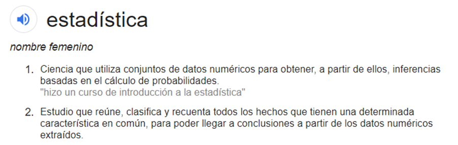

¿Para qué usar la estadística?

La estadística es la disciplina de analizar datos. Como tal, se cruza fuertemente con la ciencia de datos, el aprendizaje automático y, por supuesto, el análisis estadístico tradicional. Algunas actividades claves que definen este campo son:
- Estadísticas descriptivas
- Inferencia
- Predicción
- Diseño experimental
Definición

Actividades
- La estadística descriptiva incluye análisis de datos exploratorios, aprendizaje no supervisado, agrupamiento y resúmenes de datos básicos.
- La inferencia es el proceso de sacar conclusiones sobre las poblaciones a partir de muestras. La inferencia incluye la mayoría de las actividades tradicionalmente asociadas con estadísticas tales como: estimación, intervalos de confianza, pruebas de hipótesis y variabilidad.
- La predicción es el proceso de tratar de adivinar un resultado dado un conjunto de datos y algunos predictores. Machine learning, regression, deep learning, boosting, random forests and logistic regression son algoritmos de predicción..
- El diseño experimental es el acto de controlar su proceso experimental para optimizar la posibilidad de llegar a conclusiones sólidas. El ejemplo más notable de diseño experimental es la aleatorización. En el muestreo aleatorio, uno intenta muestrear aleatoriamente de una población de interés para obtener una mejor generalización de los resultados a la población.